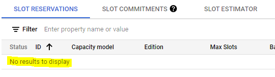
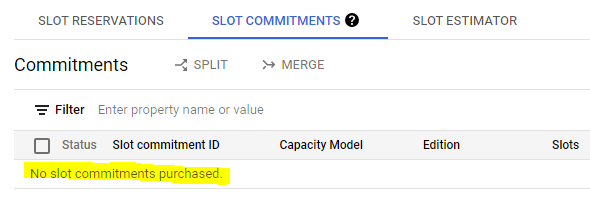

import sys
if "google.colab" in sys.modules:
IS_COLAB = True
from google.colab import auth as google_auth
google_auth.authenticate_user()
else:
# If you are running this notebook locally, replace the string below with the
# path to your service account key and run this cell to authenticate your GCP
# account.
%env GOOGLE_APPLICATION_CREDENTIALS ''Overview
This post is about training a Matrix Factorization model with BigQuery ML and deploying it as Docker container. The end-to-end process is orchestrated through a Vertex AI pipeline.
The post is strongly based on this tutorial: - YouTube: Recommendation Engine Pipeline with BigQuery ML and Vertex AI Pipelines using Matrix Factorization
But there are some key differences:
- This post documents the whole process, from loading the data into BigQuery to how to make recommendations in different ways.
- On July 5th there was a Transition to BigQuery editions which resulted in some changes being made to adapt the scripts shown in the original video.
- When trying to replicate the video tutorial I had to solve some issues with the pipeline failing to run. Most of the issues were very hard to debug, with misleading error messages and layers over layer of abstraction between python libraries and component definitions. At the end most of the errors were about the Default Service Account not having the requiered permission. So,
- In this post we can see and run each step and command to create a Service Account and grant this account granular permissions to the Google Cloud resources needed for the end to end process to run. This is what the Google documentation recommends.
- There are also the commands to enable each service API needed for the project.
At the end we shoud get a flow like this:

Additional Resources
- YouTube: Lesson 7: Practical Deep Learning for Coders 2022 - Collaborative filtering deep dive
- Tutorial: Use BigQuery ML to make recommendations from Google analytics data
Note
This notebook is better suited for running in Colab.
Blog Post Parts
Part 1. Train and Deploy
- Loading MovieLens data into BigQuery
- Setup services and accounts for the Vertex AI Pipeline to run
- Create and run the Pipeline and its Components
- Make sure no reservation or slot assignment remains active
Part 2. Inference
- Use the Cloud Run endpoint to get recommendations
- Get recommendations from BigQuery ML
- Get Weights and Bias (Embeddings) and do the math
Before you begin
- Select or create a Google Cloud project.
- Make sure that billing is enabled for your project.
- You can run the code locally or in Colab. If you are locally you need to install the gcloud CLI.
Loading data into BigQuery
Reference: Load the Movielens dataset into BigQuery
Authenticate your Google Cloud account
Set your project ID
PROJECT_ID = "[your-project-id]" # @param {type:"string"}Download MovieLens 1M movie ratings dataset
! curl -O 'http://files.grouplens.org/datasets/movielens/ml-1m.zip'
! unzip -o ml-1m.zipChange te existing :: delimiter to comma and save the files as .csv:
! sed 's/::/,/g' ml-1m/ratings.dat > ratings.csv
! sed 's/::/@/g' ml-1m/movies.dat > movie_titles.csvCreate BigQuery datasets and populate the tables
Define the names of the datasets.
MODEL_DATASET = "[bq-model-dataset]" # @param {type:"string"}
MOVIELENS_DATASET = "[bq-data-dataset]" # @param {type:"string"}# To store the model
! bq mk --location=US --dataset {PROJECT_ID}:{MODEL_DATASET}
# To store movies and reviews tables
! bq mk --location=US --dataset {PROJECT_ID}:{MOVIELENS_DATASET}Create and populate the tables movielens_1m and movie_titles.
# Reviews table
! bq load --project_id={PROJECT_ID} --source_format=CSV {PROJECT_ID}:{MOVIELENS_DATASET}.movielens_1m ratings.csv user_id:INT64,item_id:INT64,rating:FLOAT64,timestamp:TIMESTAMP
# Movies table
! bq load --project_id={PROJECT_ID} --source_format=CSV --field_delimiter=@ {PROJECT_ID}:{MOVIELENS_DATASET}.movie_titles movie_titles.csv movie_id:INT64,movie_title:STRING,genre:STRINGVertex AI Pipeline. Install Libraries and Setup Services and Accounts
Install Libraries
%%capture
! pip install google-cloud-aiplatform==1.21.0 --upgrade
! pip install kfp==2.0.1 --upgrade
! pip install google-cloud-pipeline-components==2.0.0 --upgradeRestart the Kernel
# Automatically restart kernel after installs so that your environment can access the new packages
import IPython
app = IPython.Application.instance()
app.kernel.do_shutdown(True)Set Project Variables
PROJECT_ID = "[your-project-id]" # @param {type:"string"}
REGION = "us-central1" # @param {type: "string"}
BUCKET_NAME = "[pipeline-bucket]" # @param {type: "string"}
PIPELINE_ROOT = f"gs://{BUCKET_NAME}/"
MODEL_DIR = PIPELINE_ROOT + "recommender_model" # @param {type: "string"}Authenticate your Google Cloud account (again)
Since the kernel was restarted, authenticate again.
import sys
if "google.colab" in sys.modules:
IS_COLAB = True
from google.colab import auth as google_auth
google_auth.authenticate_user()
else:
# If you are running this notebook locally, replace the string below with the
# path to your service account key and run this cell to authenticate your GCP
# account.
%env GOOGLE_APPLICATION_CREDENTIALS <path-to-json-credential>! gcloud config set project {PROJECT_ID}Enable Service APIs
Enabling the APIs with commands instead of doing it in the UI keeps everythong documented. For this project the following services are needed: - Identity and Access Management (IAM) API - Vertex AI API - Cloud Build API - BigQuery API (Although this should be enabled already if the datasets were created and the tables populated) - BigQuery Reservation API - Cloud Run Admin API - Cloud Storage API
! gcloud services enable iam.googleapis.com --project={PROJECT_ID}
! gcloud services enable aiplatform.googleapis.com --project={PROJECT_ID}
! gcloud services enable cloudbuild.googleapis.com --project={PROJECT_ID}
! gcloud services enable bigquery.googleapis.com --project={PROJECT_ID}
! gcloud services enable bigqueryreservation.googleapis.com --project={PROJECT_ID}
! gcloud services enable run.googleapis.com --project={PROJECT_ID}
! gcloud services enable storage-component.googleapis.com --project={PROJECT_ID}Create a Service Account for the pipeline to run
SERVICE_ACCOUNT_ID = "[your-service-account-id]" # @param {type:"string"}If the following cell returns an error in Colab, run it in your local machine. Or create the account directly in the Google Cloud Console UI.
! gcloud iam service-accounts create {SERVICE_ACCOUNT_ID} --description="Vertex AI Pipeline Service Account" --display-name="vertex_service_account"SERVICE_ACCOUNT = f"{SERVICE_ACCOUNT_ID}@{PROJECT_ID}.iam.gserviceaccount.com"If not, use the Default Service Account instead
shell_output = ! gcloud projects describe {PROJECT_ID}
PROJECT_NUMBER = shell_output[-1].split(":")[1].strip().replace("'", "")
DEFAULT_SERVICE_ACCOUNT = f"{PROJECT_NUMBER}-compute@developer.gserviceaccount.com"import sys
IS_COLAB = "google.colab" in sys.modules
if (
SERVICE_ACCOUNT_ID == ""
or SERVICE_ACCOUNT_ID is None
or SERVICE_ACCOUNT_ID == "[your-service-account-id]"
):
# Get your service account from gcloud
if not IS_COLAB:
shell_output = !gcloud auth list 2>/dev/null
DEFAULT_SERVICE_ACCOUNT = shell_output[2].replace("*", "").strip()
if IS_COLAB:
shell_output = ! gcloud projects describe {PROJECT_ID}
PROJECT_NUMBER = shell_output[-1].split(":")[1].strip().replace("'", "")
DEFAULT_SERVICE_ACCOUNT = f"{PROJECT_NUMBER}-compute@developer.gserviceaccount.com"
print("Service Account:", DEFAULT_SERVICE_ACCOUNT)
SERVICE_ACCOUNT = DEFAULT_SERVICE_ACCOUNTGrant the Service Account granular permissions to GCP resources
The most challenging part of the project was figuring out how to give the service account the right granular permissions. I didn’t want to give the service account the Editor or Owner rol. It took me a while to find the right roles. As I mentioned some errors in the pipeline were because lack of permissions, but it was hard to troubleshoot as there wasn’t any mention to the actual rol needed.
Grant aiplatform.user rol
service_arg = f"serviceAccount:{SERVICE_ACCOUNT}"
! gcloud projects add-iam-policy-binding {PROJECT_ID} --member={service_arg} --role="roles/aiplatform.user"Create the GCS bucket and assign storage.objectAdmin rol
I first assigned storage.objectCreator and objectViewer roles. Took me hours to find out that the trained model couldn’t be exported without the rol of storage.objectAdmin, which is needed to modify existing data in the bucket.
! gsutil mb -p {PROJECT_ID} -l {REGION} {PIPELINE_ROOT}
! gsutil iam ch serviceAccount:{SERVICE_ACCOUNT}:roles/storage.objectAdmin {PIPELINE_ROOT}Cloud Run’s run.developer rol
! gcloud projects add-iam-policy-binding {PROJECT_ID} --member={service_arg} --role="roles/run.developer"Cloud Build’s cloudbuild.builds.editor rol
I thought that Cloud Run developer rol was enough for the model to be deployed. Took me a while to find out the service account needed a permission from Cloud Build service also.
! gcloud projects add-iam-policy-binding {PROJECT_ID} --member={service_arg} --role="roles/cloudbuild.builds.editor"Assign roles to Cloud Build’s service account
When Cloud Build’s API is enabled, its service account is automatically created.
By default – for security reasons – the Cloud Build Service Account does not have the permissions to manage Cloud Run. Google Cloud Build + Google Cloud Run
First lets grab the default Cloud Build and Compute Engine service accounts.
# Cloud Build default service account
cloud_build_sa = f"{PROJECT_NUMBER}@cloudbuild.gserviceaccount.com"
service_build_arg = f"serviceAccount:{cloud_build_sa}"
# Compute Engine default service account
compute_engine_sa = f"{PROJECT_NUMBER}-compute@developer.gserviceaccount.com"! gcloud projects add-iam-policy-binding {PROJECT_ID} --member={service_build_arg} --role="roles/run.admin"And the last part was to “Grant the IAM Service Account User role to the Cloud Build service account on the Cloud Run runtime service account”.
Meaning that Cloud Build service account is going to be able to impersonate Cloud Run runtime service account, which is Compute Engine default service account. More on impersonation here: Youtube: Service Account Impersonation in Google Cloud - IAM in GCP
! gcloud iam service-accounts add-iam-policy-binding {compute_engine_sa} --member={service_build_arg} --role="roles/iam.serviceAccountUser"And that’s it, all services are enabled and the service accounts has the granular permission for the pipeline to run.
Vertex AI Pipeline - Create and Run the Pipeline
Import Libraries
import kfp
from typing import NamedTuple
from kfp.dsl import (
pipeline, component, OutputPath, InputPath, Model,
Input, Artifact, Output, Metrics
)
from kfp import compiler
from google.cloud import aiplatform
from google.cloud.aiplatform import pipeline_jobsInitialize Vertex AI SDK for Python
aiplatform.init(project=PROJECT_ID, location=REGION)Declare Pipeline Components
Create BigQuery Reservation Component
@component(packages_to_install=["google-cloud-bigquery-reservation==1.11.2"])
def create_reservation(
project: str,
location: str,
commitment_slots: int,
reservation_id: str
) -> NamedTuple("outputs", [("reservation_name", str), ("assignment_name", str)]):
"""
Create BigQuery Reservation and Assignment
"""
print('project', project, 'location', location, 'commitment_slots', commitment_slots, 'reservation_id', reservation_id)
# import libraries
import time
from google.cloud.bigquery_reservation_v1 import (
CapacityCommitment, Reservation, Assignment, ReservationServiceClient
)
reservation_client = ReservationServiceClient()
parent_arg = f"projects/{project}/locations/{location}"
# Reservation (autoscaling)
autosc = Reservation.Autoscale(current_slots=0, max_slots=commitment_slots) # NEW Jul-05 Update
#reservation_slots = commitment_slots
slot_capacity = 0
reservation_config = Reservation(
#slot_capacity=reservation_slots,
slot_capacity=slot_capacity, autoscale=autosc, # NEW Jul-05 Update
edition='ENTERPRISE', # NEW Jul-05 Update (Could be "STANDARD" ?)
ignore_idle_slots=False
)
reservation = reservation_client.create_reservation(
parent=parent_arg, reservation_id=reservation_id, reservation=reservation_config
)
reservation_name = reservation.name
print('reservation_name', reservation_name)
# Assignment
print("Creating Assignment...")
assignment_config = Assignment(
job_type='QUERY', assignee='projects/{}'.format(project)
)
assignment = reservation_client.create_assignment(
parent=reservation_name, assignment=assignment_config
)
assignment_name = assignment.name
print('assignment_name', assignment_name)
# it can take a lot for the slots to be available
print("Waiting for 300 seconds...")
time.sleep(300)
return reservation_name, assignment_name
This is Important
After the reservation is created, the account is going to be billed by time and number of slots. It can cost about $3 for each pipeline run, but you need to be very cautious about the pipeline failing before the reservation is deleted. To be sure the reservation is deleted you can go to https://console.cloud.google.com/bigquery/admin/reservations and select the project of interest. Check that SLOT RESERVATIONS and SLOT COMMITMENTS are empty and look like this:
SLOT RESERVATIONS

SLOT COMMITMENTS

If not empty, delete them in the UI. Below you can find some scripts you can run to delete the reservations in case the pipeline fails before doing it.
Delete Reservation Component
@component(packages_to_install=["google-cloud-bigquery-reservation==1.11.2"])
def delete_reservation(
reservation_name: str,
assignment_name: str
):
# import libraries
from google.cloud.bigquery_reservation_v1 import ReservationServiceClient
# Delete Assignment, Reservation and Capacity
reservation_client = ReservationServiceClient()
reservation_client.delete_assignment(name=assignment_name)
reservation_client.delete_reservation(name=reservation_name)
print('reservation_name', reservation_name, 'deleted')
print('assignment_name', assignment_name, 'deleted')Log Eval Metrics Component
@component()
def log_eval_metrics(
eval_metrics: Input[Artifact], metrics: Output[Metrics]
) -> dict:
# import libraries
import math
metadata = eval_metrics.metadata
for r in metadata["rows"]:
rows = r["f"]
schema = metadata["schema"]["fields"]
output = {}
for metric, value in zip(schema, rows):
metric_name = metric["name"]
val = float(value["v"])
output[metric_name] = val
metrics.log_metric(metric_name, val)
print(output)Deploy Model Component
The names in this function are hard coded. It assumes you keep recommender_model as the model dir. If it was changed previously, change it here accordingly. Also edit [PIPELINE_ROOT] with your chosen name.
@component(packages_to_install=[
"google-cloud-build==3.18.0",
"google-api-python-client==2.93.0"])
def deploy_recommendations_model(
artifact_uri: str,
project: str
):
# import libraries
from google.cloud.devtools import cloudbuild
from googleapiclient.discovery import build
# Deploy Model
client = cloudbuild.CloudBuildClient()
build = cloudbuild.Build()
# Fill [PIPELINE_ROOT] with your selected parameter
# If you didn't keep `recommender_model` change it accordingly
build.steps = [
{ "name": "gcr.io/cloud-builders/gsutil",
"args": ["cp", "-r", '[PIPELINE_ROOT]/recommender_model', "."] },
{ "name": "gcr.io/cloud-builders/gsutil",
"args": ["cp", "-r", '[PIPELINE_ROOT]/dockerfile/Dockerfile/', "Dockerfile"] },
{ "name": "gcr.io/cloud-builders/docker",
"args": ["build", "-t", f"gcr.io/{project}/recommender_model", "." ] },
{ "name": "gcr.io/cloud-builders/docker",
"args": ["push", f"gcr.io/{project}/recommender_model"] },
{ "name": "gcr.io/cloud-builders/gcloud",
"args": [
"run", "deploy",
"recommender-model", "--image", f"gcr.io/{project}/recommender_model",
"--region", "us-central1", "--platform", "managed", "--memory", "500Mi",
"--allow-unauthenticated", "--max-instances", "5", "--port", "8501"
]
}
]
operation = client.create_build(project_id=project, build=build)
# Print the in-progress operation
print("IN PROGRESS:")
print(operation.metadata)
result = operation.result()
# Print the completed status
print("RESULT:", result.status)Create the Docker file and copy it to GCS
Keep recommender_model or change it accordingly.
%%writefile Dockerfile
FROM tensorflow/serving:2.4.4
ENTRYPOINT ["/usr/bin/env"]
ENV MODEL_NAME=recommender_model
ENV PORT=8501
COPY recommender_model /models/recommender_model/1
CMD tensorflow_model_server --port=8500 --rest_api_port=$PORT --model_base_path=/models/recommender_model --model_name=$MODEL_NAMEdocker_path = PIPELINE_ROOT + 'dockerfile/'
! gsutil cp Dockerfile {docker_path}Pipeline and Job
Declare the Pipeline
@pipeline(
name="bigquery-recommender-pipeline",
pipeline_root=PIPELINE_ROOT + "bigquery-recommender-pipeline"
)
def recommendation_pipeline(
artifact_uri: str,
display_name: str
):
# import libraries
from google_cloud_pipeline_components.v1.bigquery import (
BigqueryCreateModelJobOp,
BigqueryEvaluateModelJobOp,
BigqueryExportModelJobOp
)
# NODE create-reservation
project = PROJECT_ID
location = "us"
slots = 100
reservation_id = "matrix-factorization-reservation"
create_reservation_task = create_reservation(
project=project, location=location, commitment_slots=slots, reservation_id=reservation_id
)
# NODE create-model-task
# Query for training
num_factors = 60
q = f"""
CREATE OR REPLACE MODEL {MODEL_DATASET}.model_00
OPTIONS
(model_type='matrix_factorization',
user_col='user_id',
item_col='item_id',
RATING_COL='rating',
feedback_type='EXPLICIT',
l2_reg=9.83,
num_factors={num_factors}) AS
SELECT user_id, item_id, rating FROM {MOVIELENS_DATASET}.movielens_1m
"""
create_model_task = BigqueryCreateModelJobOp(
project=project,
location=location,
query=q,
).after(create_reservation_task)
# NODE evaluate-model-task
bq_evaluate_task = BigqueryEvaluateModelJobOp(
project=project, location=location, model=create_model_task.outputs["model"]
).after(create_model_task)
# NODE delete-reservation
delete_reservation_task = delete_reservation(
reservation_name=create_reservation_task.outputs["reservation_name"],
assignment_name=create_reservation_task.outputs["assignment_name"]
).after(bq_evaluate_task)
# NODE log-eval-metrics
bqml_eval_metrics_raw = bq_evaluate_task.outputs["evaluation_metrics"]
log_eval_metrics_task = log_eval_metrics(
eval_metrics=bqml_eval_metrics_raw
)
# NODE export-bq-model-to-gcs
bq_export_task = BigqueryExportModelJobOp(
project=project,
location=location,
model=create_model_task.outputs["model"],
model_destination_path=artifact_uri,
).after(create_model_task)
# NODE deploy-model-cloud-run
deploy_recommendations_model_task = deploy_recommendations_model(
artifact_uri=artifact_uri,
project=project
).after(bq_export_task)Compile the Pipeline
compiler.Compiler().compile(
pipeline_func=recommendation_pipeline,
package_path="recommendation_pipeline.json"
)Create and Run the Job
job = pipeline_jobs.PipelineJob(
enable_caching=False,
display_name="recommendation-pipeline",
template_path="recommendation_pipeline.json",
parameter_values={
"artifact_uri": MODEL_DIR,
"display_name": "recommendation",
}
)job.run(
service_account=SERVICE_ACCOUNT,
sync=False
)The pipeline can be monitored here: - GCP COnsole: Vertex AI Pipelines
And if all went fine, you must see a beautiful picture like this:
Make sure no reservation or slot assignment is active
If the pipeline fails before deleting the reservation, this command lists the reservations, if any.
! bq ls --reservation --project_id={PROJECT_ID} --location=usAnd this command shows the assignment.
! bq show --project_id={PROJECT_ID} --location=us --reservation_assignment --job_type=QUERY --assignee_id={PROJECT_ID} --assignee_type=PROJECTDelete any reservation and assignment
shell_output = ! bq show --project_id={PROJECT_ID} --location=us --reservation_assignment --job_type=QUERY --assignee_id={PROJECT_ID} --assignee_type=PROJECT
assignment_id = shell_output[2].split(' ')[2].split('.')[-1]
reservation_id = 'matrix-factorization-reservation' # As declared in the pipeline
# remove assignment
! bq rm --project_id={PROJECT_ID} --location=us --reservation_assignment {reservation_id}.{assignment_id}
# remove reservation
! bq rm --project_id={PROJECT_ID} --location=us --reservation {reservation_id}Monitor the process
- https://console.cloud.google.com/cloud-build/builds?project=[your-project-id]
- https://console.cloud.google.com/run?project=[your-project-id]
- https://console.cloud.google.com/vertex-ai/pipelines/runs?project=[your-project-id]
Conclusions
An that’s about it. The automated process for training an deploying the model using BigQuery ML and Vertex AI pipeline. In Part 2 we will see how to do inference and how to get insight from the embeddings (latent factors) learned by the model for each item and user.